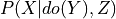

Algorithms for Inference¶
Causal Inference¶
-
class
pgmpy.inference.CausalInference.CausalInference(model, set_nodes=None)[source]¶ This is an inference class for performing Causal Inference over Bayesian Networks or Structural Equation Models.
- This class will accept queries of the form: P(Y | do(X)) and utilize its methods to provide an estimand which:
Identifies adjustment variables
Backdoor Adjustment
Front Door Adjustment
Instrumental Variable Adjustment
- Parameters
Examples
Create a small Bayesian Network. >>> from pgmpy.models.BayesianModel import BayesianModel >>> game = BayesianModel([(‘X’, ‘A’), … (‘A’, ‘Y’), … (‘A’, ‘B’)])
Load the graph into the CausalInference object to make causal queries. >>> from pgmpy.inference.CausalInference import CausalInference >>> inference = CausalInference(game) >>> inference.get_all_backdoor_adjustment_sets(X=”X”, Y=”Y”) >>> inference.get_all_frontdoor_adjustment_sets(X=”X”, Y=”Y”)
References
‘Causality: Models, Reasoning, and Inference’ - Judea Pearl (2000)
Many thanks to @ijmbarr for their implementation of Causal Graphical models available. It served as an invaluable reference. Available on GitHub: https://github.com/ijmbarr/causalgraphicalmodels
-
estimate_ate(X, Y, data, estimand_strategy='smallest', estimator_type='linear', **kwargs)[source]¶ Estimate the average treatment effect (ATE) of X on Y.
- Parameters
X (str) – Intervention Variable
Y (str) – Target Variable
data (pandas.DataFrame) – All observed data for this Bayesian Network.
estimand_strategy (str or frozenset) –
Either specify a specific backdoor adjustment set or a strategy. The available options are:
- smallest:
Use the smallest estimand of observed variables
- all:
Estimate the ATE from each identified estimand
estimator_type (str) –
The type of model to be used to estimate the ATE. All of the linear regression classes in statsmodels are available including:
GLS: generalized least squares for arbitrary covariance
OLS: ordinary least square of i.i.d. errors
WLS: weighted least squares for heteroskedastic error
Specify them with their acronym (e.g. “OLS”) or simple “linear” as an alias for OLS.
**kwargs (dict) –
Keyward arguments specific to the selected estimator. linear:
- missing: str
Available options are “none”, “drop”, or “raise”
- Returns
float
- Return type
The average treatment effect
Examples
>>> import pandas as pd >>> game1 = BayesianModel([('X', 'A'), ... ('A', 'Y'), ... ('A', 'B')]) >>> data = pd.DataFrame(np.random.randint(2, size=(1000, 4)), columns=['X', 'A', 'B', 'Y']) >>> inference = CausalInference(model=game1) >>> inference.estimate_ate("X", "Y", data=data, estimator_type="linear")
-
get_all_backdoor_adjustment_sets(X, Y)[source]¶ Returns a list of all adjustment sets per the back-door criterion.
- A set of variables Z satisfies the back-door criterion relative to an ordered pair of variabies (Xi, Xj) in a DAG G if:
no node in Z is a descendant of Xi; and
Z blocks every path between Xi and Xj that contains an arrow into Xi.
Todo
Backdoors are great, but the most general things we could implement would be Ilya Shpitser’s ID and IDC algorithms. See [his Ph.D. thesis for a full explanation] (https://ftp.cs.ucla.edu/pub/stat_ser/shpitser-thesis.pdf). After doing a little reading it is clear that we do not need to immediatly implement this. However, in order for us to truly account for unobserved variables, we will need not only these algorithms, but a more general implementation of a DAG. Most DAGs do not allow for bidirected edges, but it is an important piece of notation which Pearl and Shpitser use to denote graphs with latent variables.
- Parameters
X (str) – Intervention Variable
- Returns
frozenset (A frozenset of frozensets)
Y (str) – Target Variable
Examples
>>> game1 = BayesianModel([('X', 'A'), ... ('A', 'Y'), ... ('A', 'B')]) >>> inference = CausalInference(game1) >>> inference.get_all_backdoor_adjustment_sets("X", "Y") frozenset()
References
“Causality: Models, Reasoning, and Inference”, Judea Pearl (2000). p.79.
-
get_all_frontdoor_adjustment_sets(X, Y)[source]¶ Identify possible sets of variables, Z, which satisify the front-door criterion relative to given X and Y.
- Z satisifies the front-door critierion if:
Z intercepts all directed paths from X to Y
there is no backdoor path from X to Z
all back-door paths from Z to Y are blocked by X
- Returns
frozenset
- Return type
a frozenset of frozensets
References
Causality: Models, Reasoning, and Inference, Judea Pearl (2000). p.82.
-
get_distribution()[source]¶ Returns a string representing the factorized distribution implied by the CGM.
-
get_minimal_adjustment_set(X, Y)[source]¶ Method to test whether adjustment_set is a valid adjustment set for identifying the causal effect of X on Y.
- Parameters
- Returns
set or None – If None, no adjutment set is possible.
- Return type
A set of variables which are the minimal possible adjustment set.
Examples
References
[1] Perkovic, Emilija, et al. “Complete graphical characterization and construction of adjustment sets in Markov equivalence classes of ancestral graphs.” The Journal of Machine Learning Research 18.1 (2017): 8132-8193.
-
get_proper_backdoor_graph(X, Y, inplace=False)[source]¶ Returns a proper backdoor graph for the exposure X and outcome Y. A proper backdoor graph is a graph which remove the first edge of every proper causal path from X to Y.
- Parameters
Examples
>>> from pgmpy.models import BayesianModel >>> from pgmpy.inference import CausalInference >>> model = BayesianModel([("x1", "y1"), ("x1", "z1"), ("z1", "z2"), ... ("z2", "x2"), ("y2", "z2")]) >>> c_infer = CausalInference(model) >>> c_infer.get_proper_backdoor_graph(X=["x1", "x2"], Y=["y1", "y2"]) <pgmpy.models.BayesianModel.BayesianModel at 0x7fba501ad940>
References
[1] Perkovic, Emilija, et al. “Complete graphical characterization and construction of adjustment sets in Markov equivalence classes of ancestral graphs.” The Journal of Machine Learning Research 18.1 (2017): 8132-8193.
-
is_valid_adjustment_set(X, Y, adjustment_set)[source]¶ Method to test whether adjustment_set is a valid adjustment set for identifying the causal effect of X on Y.
- Parameters
- Returns
boolean – identifying the effect of X on Y. Else returns False.
- Return type
Returns True if adjustment_set is a valid adjustment set for
Examples
>>> from pgmpy.models import BayesianModel >>> from pgmpy.inference import CausalInference >>> model = BayesianModel([("x1", "y1"), ("x1", "z1"), ("z1", "z2"), ... ("z2", "x2"), ("y2", "z2")]) >>> c_infer = CausalInference(model) >>> c_infer.is_valid_adjustment_set(X=['x1', 'x2'], Y=['y1', 'y2'], adjustment_set=['z1', 'z2']) True
References
[1] Perkovic, Emilija, et al. “Complete graphical characterization and construction of adjustment sets in Markov equivalence classes of ancestral graphs.” The Journal of Machine Learning Research 18.1 (2017): 8132-8193.
-
is_valid_backdoor_adjustment_set(X, Y, Z=[])[source]¶ Test whether Z is a valid backdoor adjustment set for estimating the causal impact of X on Y.
- Parameters
- Returns
boolean
- Return type
True if Z is a valid backdoor adjustment set.
Examples
>>> game1 = BayesianModel([('X', 'A'), ... ('A', 'Y'), ... ('A', 'B')]) >>> inference = CausalInference(game1) >>> inference.is_valid_backdoor_adjustment_set("X", "Y") True
-
is_valid_frontdoor_adjustment_set(X, Y, Z=None)[source]¶ Test whether Z is a valid frontdoor adjustment set for estimating the causal impact of X on Y via the frontdoor adjustment formula.
-
query(variables, do=None, evidence=None, adjustment_set=None, inference_algo='ve', show_progress=True, **kwargs)[source]¶ Performs a query on the model of the form

where is variables,
is variables,  is do and Z is the evidence.
is do and Z is the evidence.
- Parameters
variables (list) – list of variables in the query i.e. X in .
do (dict (default: None)) – Dictionary of the form {variable_name: variable_state} representing the variables on which to apply the do operation i.e. Y in .
evidence (dict (default: None)) – Dictionary of the form {variable_name: variable_state} repesenting the conditional variables in the query i.e. Z in
 .
.adjustment_set (str or list (default=None)) – Specifies the adjustment set to use. If None, uses the parents of the do variables as the adjustment set.
inference_algo (str or pgmpy.inference.Inference instance) – The inference algorithm to use to compute the probability values. String options are: 1) ve: Variable Elimination 2) bp: Belief Propagation.
kwargs (Any) – Additional paramters which needs to be passed to inference algorithms. Please refer to the pgmpy.inference.Inference for details.
- Returns
pgmpy.factor.DiscreteFactor – over the variables in variables.
- Return type
A factor object representing the joint distribution
Examples
>>> from pgmpy.utils import get_example_model >>> model = get_example_model('alarm') >>> infer = CausalInference(model) >>> infer.query(['HISTORY'], do={'CVP': 'LOW'}, evidence={'HR': 'LOW'}) <DiscreteFactor representing phi(HISTORY:2) at 0x7f4e0874c2e0>
Variable Elimination¶
-
class
pgmpy.inference.ExactInference.VariableElimination(model)[source]¶ -
induced_graph(elimination_order)[source]¶ Returns the induced graph formed by running Variable Elimination on the network.
- Parameters
elimination_order (list, array like) – List of variables in the order in which they are to be eliminated.
Examples
>>> import numpy as np >>> import pandas as pd >>> from pgmpy.models import BayesianModel >>> from pgmpy.inference import VariableElimination >>> values = pd.DataFrame(np.random.randint(low=0, high=2, size=(1000, 5)), ... columns=['A', 'B', 'C', 'D', 'E']) >>> model = BayesianModel([('A', 'B'), ('C', 'B'), ('C', 'D'), ('B', 'E')]) >>> model.fit(values) >>> inference = VariableElimination(model) >>> inference.induced_graph(['C', 'D', 'A', 'B', 'E'])
-
induced_width(elimination_order)[source]¶ Returns the width (integer) of the induced graph formed by running Variable Elimination on the network. The width is the defined as the number of nodes in the largest clique in the graph minus 1.
- Parameters
elimination_order (list, array like) – List of variables in the order in which they are to be eliminated.
Examples
>>> import numpy as np >>> import pandas as pd >>> from pgmpy.models import BayesianModel >>> from pgmpy.inference import VariableElimination >>> values = pd.DataFrame(np.random.randint(low=0, high=2, size=(1000, 5)), ... columns=['A', 'B', 'C', 'D', 'E']) >>> model = BayesianModel([('A', 'B'), ('C', 'B'), ('C', 'D'), ('B', 'E')]) >>> model.fit(values) >>> inference = VariableElimination(model) >>> inference.induced_width(['C', 'D', 'A', 'B', 'E']) 3
-
map_query(variables=None, evidence=None, virtual_evidence=None, elimination_order='MinFill', show_progress=True)[source]¶ Computes the MAP Query over the variables given the evidence.
Note: When multiple variables are passed, it returns the map_query for each of them individually.
- Parameters
variables (list) – list of variables over which we want to compute the max-marginal.
evidence (dict) – a dict key, value pair as {var: state_of_var_observed} None if no evidence
virtual_evidence (list (default:None)) – A list of pgmpy.factors.discrete.TabularCPD representing the virtual evidences.
elimination_order (list) – order of variable eliminations (if nothing is provided) order is computed automatically
show_progress (boolean) – If True, shows a progress bar.
Examples
>>> from pgmpy.inference import VariableElimination >>> from pgmpy.models import BayesianModel >>> import numpy as np >>> import pandas as pd >>> values = pd.DataFrame(np.random.randint(low=0, high=2, size=(1000, 5)), ... columns=['A', 'B', 'C', 'D', 'E']) >>> model = BayesianModel([('A', 'B'), ('C', 'B'), ('C', 'D'), ('B', 'E')]) >>> model.fit(values) >>> inference = VariableElimination(model) >>> phi_query = inference.map_query(['A', 'B'])
-
max_marginal(variables=None, evidence=None, elimination_order='MinFill', show_progress=True)[source]¶ Computes the max-marginal over the variables given the evidence.
- Parameters
Examples
>>> import numpy as np >>> import pandas as pd >>> from pgmpy.models import BayesianModel >>> from pgmpy.inference import VariableElimination >>> values = pd.DataFrame(np.random.randint(low=0, high=2, size=(1000, 5)), ... columns=['A', 'B', 'C', 'D', 'E']) >>> model = BayesianModel([('A', 'B'), ('C', 'B'), ('C', 'D'), ('B', 'E')]) >>> model.fit(values) >>> inference = VariableElimination(model) >>> phi_query = inference.max_marginal(['A', 'B'])
-
query(variables, evidence=None, virtual_evidence=None, elimination_order='MinFill', joint=True, show_progress=True)[source]¶ - Parameters
variables (list) – list of variables for which you want to compute the probability
evidence (dict) – a dict key, value pair as {var: state_of_var_observed} None if no evidence
virtual_evidence (list (default:None)) – A list of pgmpy.factors.discrete.TabularCPD representing the virtual evidences.
elimination_order (str or list) – order of variable eliminations (if nothing is provided) order is computed automatically.
joint (boolean (default: True)) – If True, returns a Joint Distribution over variables. If False, returns a dict of distributions over each of the variables.
show_progress (boolean) – If True, shows a progress bar.
Examples
>>> from pgmpy.inference import VariableElimination >>> from pgmpy.models import BayesianModel >>> import numpy as np >>> import pandas as pd >>> values = pd.DataFrame(np.random.randint(low=0, high=2, size=(1000, 5)), ... columns=['A', 'B', 'C', 'D', 'E']) >>> model = BayesianModel([('A', 'B'), ('C', 'B'), ('C', 'D'), ('B', 'E')]) >>> model.fit(values) >>> inference = VariableElimination(model) >>> phi_query = inference.query(['A', 'B'])
-
Belief Propagation¶
-
class
pgmpy.inference.ExactInference.BeliefPropagation(model)[source]¶ Class for performing inference using Belief Propagation method.
Creates a Junction Tree or Clique Tree (JunctionTree class) for the input probabilistic graphical model and performs calibration of the junction tree so formed using belief propagation.
- Parameters
model (BayesianModel, MarkovModel, FactorGraph, JunctionTree) – model for which inference is to performed
-
calibrate()[source]¶ Calibration using belief propagation in junction tree or clique tree.
Examples
>>> from pgmpy.models import BayesianModel >>> from pgmpy.factors.discrete import TabularCPD >>> from pgmpy.inference import BeliefPropagation >>> G = BayesianModel([('diff', 'grade'), ('intel', 'grade'), ... ('intel', 'SAT'), ('grade', 'letter')]) >>> diff_cpd = TabularCPD('diff', 2, [[0.2], [0.8]]) >>> intel_cpd = TabularCPD('intel', 3, [[0.5], [0.3], [0.2]]) >>> grade_cpd = TabularCPD('grade', 3, ... [[0.1, 0.1, 0.1, 0.1, 0.1, 0.1], ... [0.1, 0.1, 0.1, 0.1, 0.1, 0.1], ... [0.8, 0.8, 0.8, 0.8, 0.8, 0.8]], ... evidence=['diff', 'intel'], ... evidence_card=[2, 3]) >>> sat_cpd = TabularCPD('SAT', 2, ... [[0.1, 0.2, 0.7], ... [0.9, 0.8, 0.3]], ... evidence=['intel'], evidence_card=[3]) >>> letter_cpd = TabularCPD('letter', 2, ... [[0.1, 0.4, 0.8], ... [0.9, 0.6, 0.2]], ... evidence=['grade'], evidence_card=[3]) >>> G.add_cpds(diff_cpd, intel_cpd, grade_cpd, sat_cpd, letter_cpd) >>> bp = BeliefPropagation(G) >>> bp.calibrate()
-
get_clique_beliefs()[source]¶ Returns clique beliefs. Should be called after the clique tree (or junction tree) is calibrated.
-
get_sepset_beliefs()[source]¶ Returns sepset beliefs. Should be called after clique tree (or junction tree) is calibrated.
-
map_query(variables=None, evidence=None, virtual_evidence=None, show_progress=True)[source]¶ MAP Query method using belief propagation.
Note: When multiple variables are passed, it returns the map_query for each of them individually.
- Parameters
variables (list) – list of variables for which you want to compute the probability
virtual_evidence (list (default:None)) – A list of pgmpy.factors.discrete.TabularCPD representing the virtual evidences.
evidence (dict) – a dict key, value pair as {var: state_of_var_observed} None if no evidence
show_progress (boolean) – If True, shows a progress bar.
Examples
>>> from pgmpy.factors.discrete import TabularCPD >>> from pgmpy.models import BayesianModel >>> from pgmpy.inference import BeliefPropagation >>> bayesian_model = BayesianModel([('A', 'J'), ('R', 'J'), ('J', 'Q'), ... ('J', 'L'), ('G', 'L')]) >>> cpd_a = TabularCPD('A', 2, [[0.2], [0.8]]) >>> cpd_r = TabularCPD('R', 2, [[0.4], [0.6]]) >>> cpd_j = TabularCPD('J', 2, ... [[0.9, 0.6, 0.7, 0.1], ... [0.1, 0.4, 0.3, 0.9]], ... ['R', 'A'], [2, 2]) >>> cpd_q = TabularCPD('Q', 2, ... [[0.9, 0.2], ... [0.1, 0.8]], ... ['J'], [2]) >>> cpd_l = TabularCPD('L', 2, ... [[0.9, 0.45, 0.8, 0.1], ... [0.1, 0.55, 0.2, 0.9]], ... ['G', 'J'], [2, 2]) >>> cpd_g = TabularCPD('G', 2, [[0.6], [0.4]]) >>> bayesian_model.add_cpds(cpd_a, cpd_r, cpd_j, cpd_q, cpd_l, cpd_g) >>> belief_propagation = BeliefPropagation(bayesian_model) >>> belief_propagation.map_query(variables=['J', 'Q'], ... evidence={'A': 0, 'R': 0, 'G': 0, 'L': 1})
-
max_calibrate()[source]¶ Max-calibration of the junction tree using belief propagation.
Examples
>>> from pgmpy.models import BayesianModel >>> from pgmpy.factors.discrete import TabularCPD >>> from pgmpy.inference import BeliefPropagation >>> G = BayesianModel([('diff', 'grade'), ('intel', 'grade'), ... ('intel', 'SAT'), ('grade', 'letter')]) >>> diff_cpd = TabularCPD('diff', 2, [[0.2], [0.8]]) >>> intel_cpd = TabularCPD('intel', 3, [[0.5], [0.3], [0.2]]) >>> grade_cpd = TabularCPD('grade', 3, ... [[0.1, 0.1, 0.1, 0.1, 0.1, 0.1], ... [0.1, 0.1, 0.1, 0.1, 0.1, 0.1], ... [0.8, 0.8, 0.8, 0.8, 0.8, 0.8]], ... evidence=['diff', 'intel'], ... evidence_card=[2, 3]) >>> sat_cpd = TabularCPD('SAT', 2, ... [[0.1, 0.2, 0.7], ... [0.9, 0.8, 0.3]], ... evidence=['intel'], evidence_card=[3]) >>> letter_cpd = TabularCPD('letter', 2, ... [[0.1, 0.4, 0.8], ... [0.9, 0.6, 0.2]], ... evidence=['grade'], evidence_card=[3]) >>> G.add_cpds(diff_cpd, intel_cpd, grade_cpd, sat_cpd, letter_cpd) >>> bp = BeliefPropagation(G) >>> bp.max_calibrate()
-
query(variables, evidence=None, virtual_evidence=None, joint=True, show_progress=True)[source]¶ Query method using belief propagation.
- Parameters
variables (list) – list of variables for which you want to compute the probability
evidence (dict) – a dict key, value pair as {var: state_of_var_observed} None if no evidence
virtual_evidence (list (default:None)) – A list of pgmpy.factors.discrete.TabularCPD representing the virtual evidences.
joint (boolean) – If True, returns a Joint Distribution over variables. If False, returns a dict of distributions over each of the variables.
show_progress (boolean) – If True shows a progress bar.
Examples
>>> from pgmpy.factors.discrete import TabularCPD >>> from pgmpy.models import BayesianModel >>> from pgmpy.inference import BeliefPropagation >>> bayesian_model = BayesianModel([('A', 'J'), ('R', 'J'), ('J', 'Q'), ... ('J', 'L'), ('G', 'L')]) >>> cpd_a = TabularCPD('A', 2, [[0.2], [0.8]]) >>> cpd_r = TabularCPD('R', 2, [[0.4], [0.6]]) >>> cpd_j = TabularCPD('J', 2, ... [[0.9, 0.6, 0.7, 0.1], ... [0.1, 0.4, 0.3, 0.9]], ... ['R', 'A'], [2, 2]) >>> cpd_q = TabularCPD('Q', 2, ... [[0.9, 0.2], ... [0.1, 0.8]], ... ['J'], [2]) >>> cpd_l = TabularCPD('L', 2, ... [[0.9, 0.45, 0.8, 0.1], ... [0.1, 0.55, 0.2, 0.9]], ... ['G', 'J'], [2, 2]) >>> cpd_g = TabularCPD('G', 2, [[0.6], [0.4]]) >>> bayesian_model.add_cpds(cpd_a, cpd_r, cpd_j, cpd_q, cpd_l, cpd_g) >>> belief_propagation = BeliefPropagation(bayesian_model) >>> belief_propagation.query(variables=['J', 'Q'], ... evidence={'A': 0, 'R': 0, 'G': 0, 'L': 1})
MPLP¶
-
class
pgmpy.inference.mplp.Mplp(model)[source]¶ Class for performing approximate inference using Max-Product Linear Programming method.
We derive message passing updates that result in monotone decrease of the dual of the MAP LP Relaxation.
- Parameters
model (MarkovModel for which inference is to be performed.) –
Examples
>>> import numpy as np >>> from pgmpy.models import MarkovModel >>> from pgmpy.inference import Mplp >>> from pgmpy.factors.discrete import DiscreteFactor >>> student = MarkovModel() >>> student.add_edges_from([('A', 'B'), ('B', 'C'), ('C', 'D'), ('E', 'F')]) >>> factor_a = DiscreteFactor(['A'], cardinality=[2], values=np.array([0.54577, 1.8323])) >>> factor_b = DiscreteFactor(['B'], cardinality=[2], values=np.array([0.93894, 1.065])) >>> factor_c = DiscreteFactor(['C'], cardinality=[2], values=np.array([0.89205, 1.121])) >>> factor_d = DiscreteFactor(['D'], cardinality=[2], values=np.array([0.56292, 1.7765])) >>> factor_e = DiscreteFactor(['E'], cardinality=[2], values=np.array([0.47117, 2.1224])) >>> factor_f = DiscreteFactor(['F'], cardinality=[2], values=np.array([1.5093, 0.66257])) >>> factor_a_b = DiscreteFactor(['A', 'B'], cardinality=[2, 2], ... values=np.array([1.3207, 0.75717, 0.75717, 1.3207])) >>> factor_b_c = DiscreteFactor(['B', 'C'], cardinality=[2, 2], ... values=np.array([0.00024189, 4134.2, 4134.2, 0.00024189])) >>> factor_c_d = DiscreteFactor(['C', 'D'], cardinality=[2, 2], ... values=np.array([0.0043227, 231.34, 231.34, 0.0043227])) >>> factor_d_e = DiscreteFactor(['E', 'F'], cardinality=[2, 2], ... values=np.array([31.228, 0.032023, 0.032023, 31.228])) >>> student.add_factors(factor_a, factor_b, factor_c, factor_d, factor_e, factor_f, factor_a_b, ... factor_b_c, factor_c_d, factor_d_e) >>> mplp = Mplp(student)
-
class
Cluster(intersection_set_variables, cluster_potential)[source]¶ Inner class for representing a cluster. A cluster is a subset of variables.
- Parameters
set_of_variables (tuple) – This is the set of variables that form the cluster.
intersection_set_variables (set containing frozensets.) – collection of intersection of all pairs of cluster variables. For eg: {{C_1 cap C_2}, {C_2 cap C_3}, {C_3 cap C_1} } for clusters C_1, C_2 & C_3.
cluster_potential (DiscreteFactor) – Each cluster has a initial probability distribution provided beforehand.
-
find_triangles()[source]¶ Finds all the triangles present in the given model
Examples
>>> from pgmpy.models import MarkovModel >>> from pgmpy.factors.discrete import DiscreteFactor >>> from pgmpy.inference import Mplp >>> mm = MarkovModel() >>> mm.add_nodes_from(['x1', 'x2', 'x3', 'x4', 'x5', 'x6', 'x7']) >>> mm.add_edges_from([('x1', 'x3'), ('x1', 'x4'), ('x2', 'x4'), ... ('x2', 'x5'), ('x3', 'x6'), ('x4', 'x6'), ... ('x4', 'x7'), ('x5', 'x7')]) >>> phi = [DiscreteFactor(edge, [2, 2], np.random.rand(4)) for edge in mm.edges()] >>> mm.add_factors(*phi) >>> mplp = Mplp(mm) >>> mplp.find_triangles()
-
get_integrality_gap()[source]¶ - Returns the integrality gap of the current state of the Mplp algorithm. The lesser it is, the closer we are
towards the exact solution.
Examples
>>> from pgmpy.models import MarkovModel >>> from pgmpy.factors.discrete import DiscreteFactor >>> from pgmpy.inference import Mplp >>> mm = MarkovModel() >>> mm.add_nodes_from(['x1', 'x2', 'x3', 'x4', 'x5', 'x6', 'x7']) >>> mm.add_edges_from([('x1', 'x3'), ('x1', 'x4'), ('x2', 'x4'), ... ('x2', 'x5'), ('x3', 'x6'), ('x4', 'x6'), ... ('x4', 'x7'), ('x5', 'x7')]) >>> phi = [DiscreteFactor(edge, [2, 2], np.random.rand(4)) for edge in mm.edges()] >>> mm.add_factors(*phi) >>> mplp = Mplp(mm) >>> mplp.map_query() >>> int_gap = mplp.get_integrality_gap()
-
map_query(init_iter=1000, later_iter=20, dual_threshold=0.0002, integrality_gap_threshold=0.0002, tighten_triplet=True, max_triplets=5, max_iterations=100, prolong=False)[source]¶ MAP query method using Max Product LP method. This returns the best assignment of the nodes in the form of a dictionary.
- Parameters
init_iter (integer) – Number of maximum iterations that we want MPLP to run for the first time.
later_iter (integer) – Number of maximum iterations that we want MPLP to run for later iterations
dual_threshold (double) – This sets the minimum width between the dual objective decrements. If the decrement is lesser than the threshold, then that means we have stuck on a local minima.
integrality_gap_threshold (double) – This sets the threshold for the integrality gap below which we say that the solution is satisfactory.
tighten_triplet (bool) – set whether to use triplets as clusters or not.
max_triplets (integer) – Set the maximum number of triplets that can be added at once.
max_iterations (integer) – Maximum number of times we tighten the relaxation. Used only when tighten_triplet is set True.
prolong (bool) – If set False: The moment we exhaust of all the triplets the tightening stops. If set True: The tightening will be performed max_iterations number of times irrespective of the triplets.
References
Section 3.3: The Dual Algorithm; Tightening LP Relaxation for MAP using Message Passing (2008) By Sontag Et al.
Examples
>>> from pgmpy.models import MarkovModel >>> from pgmpy.factors.discrete import DiscreteFactor >>> from pgmpy.inference import Mplp >>> import numpy as np >>> student = MarkovModel() >>> student.add_edges_from([('A', 'B'), ('B', 'C'), ('C', 'D'), ('E', 'F')]) >>> factor_a = DiscreteFactor(['A'], cardinality=[2], values=np.array([0.54577, 1.8323])) >>> factor_b = DiscreteFactor(['B'], cardinality=[2], values=np.array([0.93894, 1.065])) >>> factor_c = DiscreteFactor(['C'], cardinality=[2], values=np.array([0.89205, 1.121])) >>> factor_d = DiscreteFactor(['D'], cardinality=[2], values=np.array([0.56292, 1.7765])) >>> factor_e = DiscreteFactor(['E'], cardinality=[2], values=np.array([0.47117, 2.1224])) >>> factor_f = DiscreteFactor(['F'], cardinality=[2], values=np.array([1.5093, 0.66257])) >>> factor_a_b = DiscreteFactor(['A', 'B'], cardinality=[2, 2], ... values=np.array([1.3207, 0.75717, 0.75717, 1.3207])) >>> factor_b_c = DiscreteFactor(['B', 'C'], cardinality=[2, 2], ... values=np.array([0.00024189, 4134.2, 4134.2, 0.0002418])) >>> factor_c_d = DiscreteFactor(['C', 'D'], cardinality=[2, 2], ... values=np.array([0.0043227, 231.34, 231.34, 0.0043227])) >>> factor_d_e = DiscreteFactor(['E', 'F'], cardinality=[2, 2], ... values=np.array([31.228, 0.032023, 0.032023, 31.228])) >>> student.add_factors(factor_a, factor_b, factor_c, factor_d, factor_e, factor_f, ... factor_a_b, factor_b_c, factor_c_d, factor_d_e) >>> mplp = Mplp(student) >>> result = mplp.map_query() >>> result {'B': 0.93894, 'C': 1.121, 'A': 1.8323, 'F': 1.5093, 'D': 1.7765, 'E': 2.12239}
Dynamic Bayesian Network Inference¶
-
class
pgmpy.inference.dbn_inference.DBNInference(model)[source]¶ -
backward_inference(variables, evidence=None)[source]¶ Backward inference method using belief propagation.
- Parameters
Examples
>>> from pgmpy.factors.discrete import TabularCPD >>> from pgmpy.models import DynamicBayesianNetwork as DBN >>> from pgmpy.inference import DBNInference >>> dbnet = DBN() >>> dbnet.add_edges_from([(('Z', 0), ('X', 0)), (('X', 0), ('Y', 0)), ... (('Z', 0), ('Z', 1))]) >>> z_start_cpd = TabularCPD(('Z', 0), 2, [[0.5], [0.5]]) >>> x_i_cpd = TabularCPD(('X', 0), 2, [[0.6, 0.9], ... [0.4, 0.1]], ... evidence=[('Z', 0)], ... evidence_card=[2]) >>> y_i_cpd = TabularCPD(('Y', 0), 2, [[0.2, 0.3], ... [0.8, 0.7]], ... evidence=[('X', 0)], ... evidence_card=[2]) >>> z_trans_cpd = TabularCPD(('Z', 1), 2, [[0.4, 0.7], ... [0.6, 0.3]], ... evidence=[('Z', 0)], ... evidence_card=[2]) >>> dbnet.add_cpds(z_start_cpd, z_trans_cpd, x_i_cpd, y_i_cpd) >>> dbnet.initialize_initial_state() >>> dbn_inf = DBNInference(dbnet) >>> dbn_inf.backward_inference([('X', 0)], {('Y', 0):0, ('Y', 1):1, ('Y', 2):1})[('X', 0)].values array([0.66594382, 0.33405618])
-
forward_inference(variables, evidence=None, args=None)[source]¶ Forward inference method using belief propagation.
- Parameters
variables (list) – list of variables for which you want to compute the probability
evidence (dict) – a dict key, value pair as {var: state_of_var_observed} None if no evidence
Examples –
-------- –
from pgmpy.factors.discrete import TabularCPD (>>>) –
from pgmpy.models import DynamicBayesianNetwork as DBN (>>>) –
from pgmpy.inference import DBNInference (>>>) –
dbnet = DBN() (>>>) –
dbnet.add_edges_from([(('Z' (>>>) –
0) –
('X' –
0)) –
(('X' –
0) –
('Y' –
0)) –
:param : :param … ((‘Z’: :param 0): :param (‘Z’: :param 1))]): :param >>> z_start_cpd = TabularCPD((‘Z’: :param 0): :param 2: :param [[0.5]: :param [0.5]]): :param >>> x_i_cpd = TabularCPD((‘X’: :param 0): :param 2: :param [[0.6: :param 0.9]: :param : :param … [0.4: :param 0.1]]: :param : :param … evidence=[(‘Z’: :param 0)]: :param : :param … evidence_card=[2]): :param >>> y_i_cpd = TabularCPD((‘Y’: :param 0): :param 2: :param [[0.2: :param 0.3]: :param : :param … [0.8: :param 0.7]]: :param : :param … evidence=[(‘X’: :param 0)]: :param : :param … evidence_card=[2]): :param >>> z_trans_cpd = TabularCPD((‘Z’: :param 1): :param 2: :param [[0.4: :param 0.7]: :param : :param … [0.6: :param 0.3]]: :param : :param … evidence=[(‘Z’: :param 0)]: :param : :param … evidence_card=[2]): :param >>> dbnet.add_cpds(z_start_cpd: :param z_trans_cpd: :param x_i_cpd: :param y_i_cpd): :param >>> dbnet.initialize_initial_state(): :param >>> dbn_inf = DBNInference(dbnet): :param >>> dbn_inf.forward_inference([(‘X’: :type >>> dbn_inf.forward_inference([(‘X’: 1, (‘Y’, 1):0, (‘Y’, 2):1})[(‘X’, 2)].values :param 2)]: :type 2)]: 1, (‘Y’, 1):0, (‘Y’, 2):1})[(‘X’, 2)].values :param {(‘Y’: :type {(‘Y’: 1, (‘Y’, 1):0, (‘Y’, 2):1})[(‘X’, 2)].values :param 0): :type 0): 1, (‘Y’, 1):0, (‘Y’, 2):1})[(‘X’, 2)].values :param array([0.76738736: :param 0.23261264]):
-
query(variables, evidence=None, args='exact')[source]¶ Query method for Dynamic Bayesian Network using Interface Algorithm.
- Parameters
Examples
>>> from pgmpy.factors.discrete import TabularCPD >>> from pgmpy.models import DynamicBayesianNetwork as DBN >>> from pgmpy.inference import DBNInference >>> dbnet = DBN() >>> dbnet.add_edges_from([(('Z', 0), ('X', 0)), (('X', 0), ('Y', 0)), ... (('Z', 0), ('Z', 1))]) >>> z_start_cpd = TabularCPD(('Z', 0), 2, [[0.5], [0.5]]) >>> x_i_cpd = TabularCPD(('X', 0), 2, [[0.6, 0.9], ... [0.4, 0.1]], ... evidence=[('Z', 0)], ... evidence_card=[2]) >>> y_i_cpd = TabularCPD(('Y', 0), 2, [[0.2, 0.3], ... [0.8, 0.7]], ... evidence=[('X', 0)], ... evidence_card=[2]) >>> z_trans_cpd = TabularCPD(('Z', 1), 2, [[0.4, 0.7], ... [0.6, 0.3]], ... evidence=[('Z', 0)], ... evidence_card=[2]) >>> dbnet.add_cpds(z_start_cpd, z_trans_cpd, x_i_cpd, y_i_cpd) >>> dbnet.initialize_initial_state() >>> dbn_inf = DBNInference(dbnet) >>> dbn_inf.query([('X', 0)], {('Y', 0):0, ('Y', 1):1, ('Y', 2):1})[('X', 0)].values array([0.66594382, 0.33405618])
-
Elimination Ordering¶
-
class
pgmpy.inference.EliminationOrder.BaseEliminationOrder(model)[source]¶ Base class for finding elimination orders.
-
abstract
cost(node)[source]¶ The cost function to compute the cost of elimination of each node. This method is just a dummy and returns 0 for all the nodes. Actual cost functions are implemented in the classes inheriting BaseEliminationOrder.
- Parameters
node (string, any hashable python object.) – The node whose cost is to be computed.
-
fill_in_edges(node)[source]¶ Return edges needed to be added to the graph if a node is removed.
- Parameters
node (string (any hashable python object)) – Node to be removed from the graph.
-
get_elimination_order(nodes=None, show_progress=True)[source]¶ Returns the optimal elimination order based on the cost function. The node having the least cost is removed first.
Examples
>>> import numpy as np >>> from pgmpy.models import BayesianModel >>> from pgmpy.factors.discrete import TabularCPD >>> from pgmpy.inference.EliminationOrder import WeightedMinFill >>> model = BayesianModel([('c', 'd'), ('d', 'g'), ('i', 'g'), ... ('i', 's'), ('s', 'j'), ('g', 'l'), ... ('l', 'j'), ('j', 'h'), ('g', 'h')]) >>> cpd_c = TabularCPD('c', 2, np.random.rand(2, 1)) >>> cpd_d = TabularCPD('d', 2, np.random.rand(2, 2), ... ['c'], [2]) >>> cpd_g = TabularCPD('g', 3, np.random.rand(3, 4), ... ['d', 'i'], [2, 2]) >>> cpd_i = TabularCPD('i', 2, np.random.rand(2, 1)) >>> cpd_s = TabularCPD('s', 2, np.random.rand(2, 2), ... ['i'], [2]) >>> cpd_j = TabularCPD('j', 2, np.random.rand(2, 4), ... ['l', 's'], [2, 2]) >>> cpd_l = TabularCPD('l', 2, np.random.rand(2, 3), ... ['g'], [3]) >>> cpd_h = TabularCPD('h', 2, np.random.rand(2, 6), ... ['g', 'j'], [3, 2]) >>> model.add_cpds(cpd_c, cpd_d, cpd_g, cpd_i, cpd_s, cpd_j, ... cpd_l, cpd_h) >>> WeightedMinFill(model).get_elimination_order(['c', 'd', 'g', 'l', 's']) ['c', 's', 'l', 'd', 'g'] >>> WeightedMinFill(model).get_elimination_order(['c', 'd', 'g', 'l', 's']) ['c', 's', 'l', 'd', 'g'] >>> WeightedMinFill(model).get_elimination_order(['c', 'd', 'g', 'l', 's']) ['c', 's', 'l', 'd', 'g']
-
abstract
Model Testing¶
-
class
pgmpy.inference.bn_inference.BayesianModelProbability(model)[source]¶ Class to calculate probability (pmf) values specific to Bayesian Models
-
log_probability(data, ordering=None)[source]¶ Evaluate the logarithmic probability of each point in a data set.
- Parameters
data (pandas dataframe OR array_like, shape (n_samples, n_features)) – List of n_features-dimensional data points. Each row corresponds to a single data point.
ordering (list) – ordering of columns in data, used by the Bayesian model. default is topological ordering used by model.
- Returns
ndarray – The array of log(density) evaluations. These are normalized to be probability densities, so values will be low for high-dimensional data.
- Return type
having shape (n_samples,)
-
score(data, ordering=None)[source]¶ Compute the total log probability density under the model.
- Parameters
data (pandas dataframe OR array_like, shape (n_samples, n_features)) – List of n_features-dimensional data points. Each row corresponds to a single data point.
ordering (list) – ordering of columns in data, used by the Bayesian model. default is topological ordering used by model.
- Returns
float – This is normalized to be a probability density, so the value will be low for high-dimensional data.
- Return type
total log-likelihood of the data in data.
-